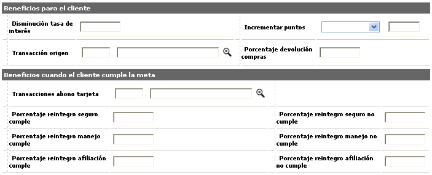
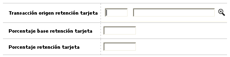
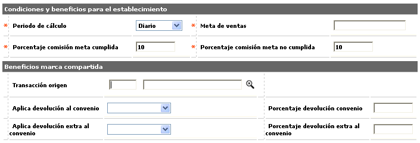
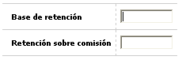
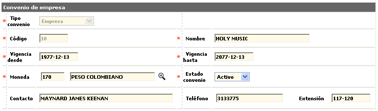
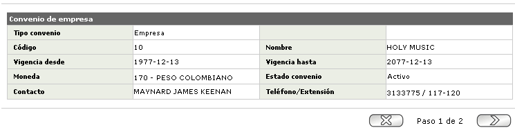

Definición de convenios
Convenio tipo Establecimiento: Si el usuario selecciona este tipo de convenio, el sistema desplegará un wizard de tres pasos: Convenio, Clientes, y Establecimientos.

|
Tipo convenio |
Campo de salida que indica el tipo de convenio seleccionado para crear. |
|
Código |
El campo del código del convenio admite cualquier valor numérico de máximo 6 dígitos sin decimales. |
|
Nombre |
El campo del nombre del convenio admite cualquier dato alfanumérico de máximo 30 caracteres, admite mayúsculas y minúsculas. En él la entidad define cada uno de los convenios, acorde con sus políticas y los pactos comerciales con las empresas o establecimientos. |
|
Vigencia desde |
Campo obligatorio, en formato YYYY-MM-DD, en el cual se determina la fecha de inicio o entrada en vigencia de cada convenio. |
|
Vigencia hasta |
Campo obligatorio, en formato YYYY-MM-DD, en el cual se determina la fecha de finalización o terminación de la vigencia de cada convenio. |
|
Moneda |
En este campo se selecciona de la lista de valores la Moneda en que se realizarán las transacciones de abono tanto a los establecimientos como a los clientes o a las empresas. |
|
Estado convenio |
Campo en el que es posible marcar si el convenio se encuentra o no activo, facilitando su desactivación temporal. |
|
Contacto |
Campo alfanumérico de 60 posiciones no obligatorio en el que se registra el nombre del funcionario de la empresa del convenio, a quien es posible contactar en caso necesario. |
|
Teléfono |
En este campo alfanumérico de 20 posiciones, no obligatorio, se pueden registrar los números telefónicos donde es posible localizar al funcionario de la empresa. |
|
Extensión |
Campo alfanumérico de 10 posiciones no obligatorio en el que se registra el número de la extensión asociada al campo anterior. |
Clientes: El segundo paso del wizard muestra los siguientes campos:

|
Disminución tasa de interés |
Campo que contiene los puntos porcentuales a descontar o en que se reduce la tasa de interés corriente a liquidar sobre los consumos efectuados en los comercios pertenecientes al programa convenio, valor que se hace efectivo al momento de aplicarse un pago que afecte los saldos de la transacción o al momento de la siguiente facturación. |
|
Incrementar puntos |
Como beneficios o incentivos para el cliente, en estos campos es posible asignar una adición o un incremento porcentual de puntos, siempre y cuando la entidad trabaje con el esquema de puntaje. Una vez identificada la manera como se causarán los puntos, en el campo siguiente se registra el valor correspondiente, siendo éstos expresados nominalmente cuando la opción es adición o en términos de porcentaje de incremento cuando la opción es multiplicar. |
|
Transacción origen |
Campo que posee lista de valores poblada en la opción Orígenes de transacciones del grupo de Tablas reservadas del Núcleo, de la que debe seleccionarse a partir del origen Procesos internos, la transacción que se generará para la realización del abono al cliente por concepto del porcentaje de devolución de sus compras. |
|
Porcentaje devolución compras |
En este campo se define la proporción a reintegrar al cliente, calculada sobre el valor original de la compra, y que se verá reflejada en una transacción de abono, que debe ser definida en el campo siguiente. |
|
Transacciones abono tarjeta |
Campo que posee lista de valores poblada en la opción de Orígenes de transacciones, de la que debe seleccionarse, a partir del origen Procesos internos, la transacción que se generará para la realización del abono al tarjetahabiente por concepto del reintegro de cuotas de seguro, manejo o afiliación independientemente de si la modalidad de pago de las mismas definida en la opción Productos, corresponda a vencida o anticipada. |
|
Porcentaje reintegro seguro cumple / no cumple |
Campos en los que se define el porcentajes de la cuota de seguro pagada por los tarjetahabientes durante a vigencia del convenio, que les será reintegrada por haber facturado a través de dicho programa convenio y tomando en cuenta el cumplimiento o no de la meta de ventas fijada por periodo. |
|
Porcentaje reintegro manejo cumple / no cumple |
Campos en los que se define el porcentajes de la cuota de manejo pagada por los tarjetahabientes durante a vigencia del convenio, que les será reintegrada por haber facturado a través de dicho programa convenio y tomando en cuenta el cumplimiento o no de la meta de ventas fijada por periodo. |
|
Porcentaje reintegro afiliación cumple / no cumple |
Campos en los que se define el porcentajes de la cuota de afiliación pagada por los tarjetahabientes durante a vigencia del convenio, que les será reintegrada por haber facturado a través de dicho programa convenio y tomando en cuenta el cumplimiento o no de la meta de ventas fijada por periodo. |
Localización: Adicionalmente, cuenta con un globo de localización que muestra los siguientes campos:

|
Transacción origen retención tarjeta |
Campo con lista de valores poblada en la opción Orígenes de transacciones, de la que debe seleccionarse a partir del origen Procesos internos, la transacción que se generará en el momento que deba efectuarse alguna retención sobre los valores devengados por el cliente, a raíz del convenio. |
|
Porcentaje base retención tarjeta |
En este campo se define el valor porcentual a aplicar sobre el monto reintegrado al cliente y que será la base que se tendrá en cuenta para la liquidación del impuesto de retención en la fuente. El valor de este campo debe ser máximo 100%, de acuerdo con las normas y/o políticas de la entidad para que el sistema realice el cálculo adecuado |
|
Porcentaje retención tarjeta |
Registra la tasa del impuesto de retención en la fuente a aplicar a la base definida en el campo anterior, sobre el monto del reintegro de cuotas (afiliación, manejo y/o seguro) al cliente. |
Establecimientos: El tercer paso del wizard muestra los siguientes campos:

|
Periodo de cálculo |
Campo que posee lista de valores adjunta de la que debe seleccionarse la frecuencia con la que el sistema evaluará si se alcanzó o no el monto propuesto. |
|
Meta de ventas |
Establece el monto mínimo en ventas que debe cumplir cada comercio, dentro de la periodicidad señalada, en convenio, para hacerse acreedor a los beneficios. |
|
Porcentaje comisión meta cumplida |
Campo que debe contener la porción a reintegrar a los comercios de la comisión, expresada en valor porcentual y calculada sobre el monto de las ventas netas (excluyendo IVA y propinas), cuando el comercio en convenio, ha alcanzado la meta establecida dentro del periodo de tiempo señalado. |
|
Porcentaje comisión meta no cumplida |
Dado que el establecimiento dentro del convenio no logró la meta de ventas dentro del periodo señalado, la entidad determina si este campo posee o no algún valor, en caso afirmativo, contiene la porción de la comisión a reintegrar a los comercios, expresada en valor porcentual y calculada sobre el monto de las ventas netas (excluyendo IVA y propinas). |
|
Transacción origen |
Campo que posee lista de valores poblada en la opción Orígenes de transacciones del grupo de Tablas reservadas del Núcleo, de la que debe seleccionarse, del origen Procesos internos, la correspondiente transacción que se generará para la realización del abono al establecimiento. |
|
Aplica devolución al convenio |
Campo que contiene una lista de valores adjunta de la cual la entidad determina la manera cómo realizará el abono al establecimiento, ya sea sobre el valor de descuento (comisión) o sobre el valor de la compra realizada por el cliente. Este parámetro es aplicable cuando el producto pertenece a un convenio y sus consumos fueron realizados en un grupo de establecimientos, o un tipo de servicio del mismo o un establecimiento, definidos para que apliquen las condiciones del convenio propiamente dicho. |
|
Porcentaje devolución convenio |
En este campo se determina el valor porcentual que se aplicará sobre el concepto definido en el campo inmediatamente anterior. Es un campo numérico de 7 posiciones enteras y 4 decimales, su diligenciamiento no es requerido, excepto cuando se define un concepto sobre el cual aplicar tal devolución. |
|
Aplica devolución extra al convenio |
Campo que contiene una lista de valores adjunta de la cual la entidad determina la manera cómo realizará el abono al establecimiento, ya sea sobre el valor de descuento (comisión) o sobre el valor de la compra realizada por el cliente. Este parámetro tiene aplicación cuando el producto pertenece al convenio pero el consumo del cliente no fue realizado en el establecimiento, o en el tipo de servicio o en el grupo de establecimientos definidos para que apliquen las condiciones del convenio propiamente dicho. |
| Porcentaje devolución extra convenio |
En este campo se determina el valor porcentual que se aplicará sobre el concepto definido en el campo inmediatamente anterior. Es un campo numérico de 7 posiciones enteras y 4 decimales, su diligenciamiento no es requerido, excepto cuando se define un concepto sobre el cual aplicar tal devolución. |
Localización: Adicionalmente, cuenta con un globo de localización que muestra los siguientes campos:

|
Base de retención |
En este campo se define el valor porcentual a estimar sobre el monto de la comisión o descuento (al establecimiento) y corresponde a la base que se tendrá en cuenta para la liquidación del impuesto de retención en la fuente por efecto de generación de comisiones por cumplimiento o no de metas. Este campo requiere ser diligenciado con un valor máximo de 100%, de acuerdo con las normas gubernamentales y/o políticas de la entidad para que el sistema realice el cálculo adecuado. |
|
Retención sobre comisión |
Se define la tasa del impuesto de retención en la fuente a aplicar, previo cálculo de la base de retención, sobre el monto de la comisión o descuento a reintegrar, para ser practicada al establecimiento en el momento de generar comisiones por cumplimiento de metas. |
Actualizar: Al activar ese enlace se despliega un nuevo formulario que consiste en un wizard de dos pasos en el cual todos los campos son modificables a exepción del Tipo convenio y Código.

Detalle: Si el usuario invoca la opción Detalle se despliega un wizard con los formularios correspondientes al tipo de convenio seleccionado.
